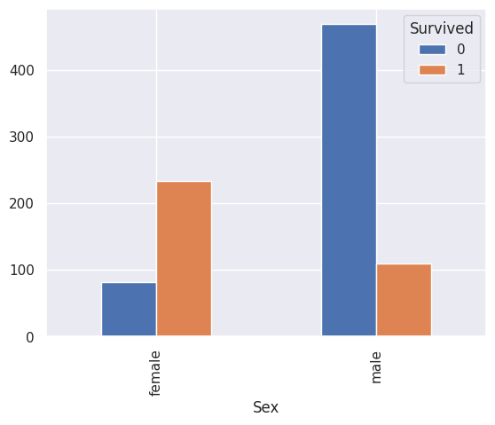
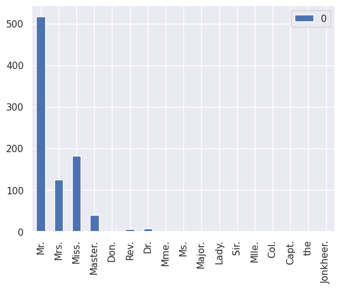
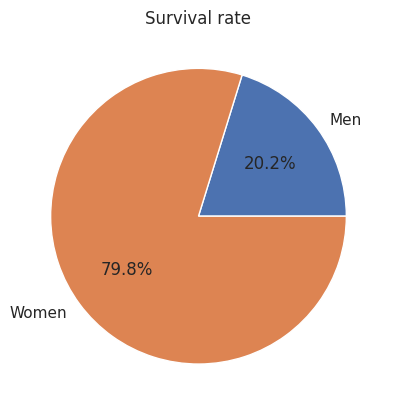
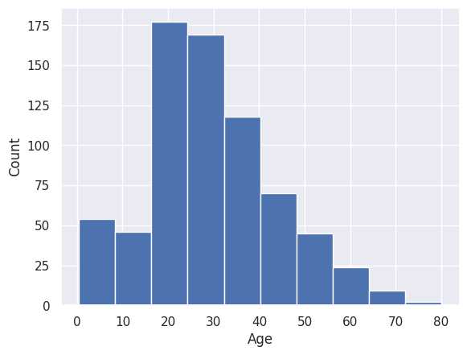
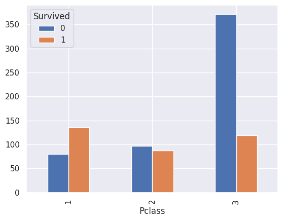
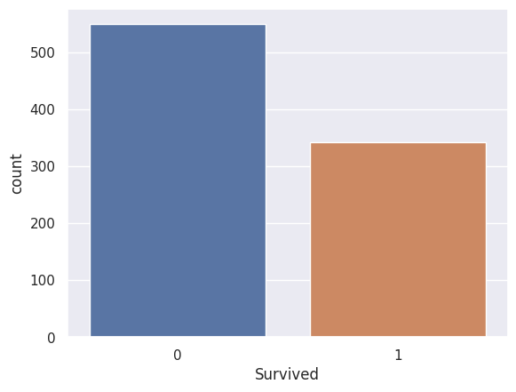
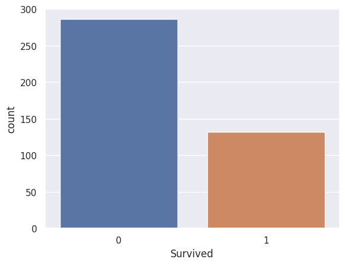

Prediction for survival of Titanic passengers
In this project, I used different machine learning models to predict the survival of passengers based on various features in the dataset.

Data
- The data for this project was taken from Kaggle.
- The data-set is labelled in two classes: "Survived: 1" and "Not survived: 0"
Step 1
Step 2
Step 3
Step 4
Best performing model came out to be Random Forest with a mean accuracy score of 84%.
Some visualisations from the project:
Distribution of titles in the names of passengers:



Discrepency in the survival based on the ticket class: 1st class passengers have a higher survival rate.
Survival ratio of Training and predicted data set:

